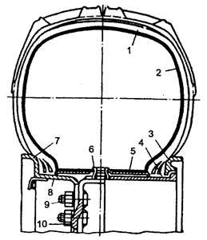
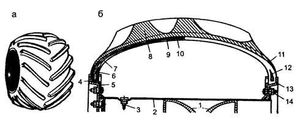

Тема 15
Резиновые материалы
Химимческий состав
резины и ее эксплуатационные свойства
Резина — сложный по составу материал, включающий в себя несколько
компонентов, основным из которых является каучук. Свойства резины зависят,
главным образом, от типа и особенностей каучука, поэтому рассмотрим основные
свойства важнейших современных каучуков.
Состав
Число деталей на автомобиле, в которых в той или иной степени
присутствует резина, превышает 500, а их масса составляет более 5 % общей массы
легкового автомобиля и более 10 % грузового.
Наиболее важными из резиновых изделий на автомобиле являются шины,
стоимость которых составляет 15—25 % стоимости грузового автомобиля, причем за
время между ремонтами меняется от 2 до 4 комплектов шин.
Резина обладает следующими уникальными свойствмаи:
— эластична,
— способна поглощать ударные нагрузки и вибрацию,
— имеет низкую теплопроводность и звукопроводность,
— имеет хорошую механическую прочность,
— обладает высоким сопротивлением к истиранию,
— является хорошим электроизолятором,
— газо- и водонепроницаема,
— устойчива к агрессивным средам,
— легкая.
Резину получают вулканизацией резиновой смеси, в состав которой входят:
— каучук,
— вулканизирующие агенты,
— ускорители вулканизации,
— активаторы,
— противостарители,
— активные наполнители или усилители,
— неактивные наполнители,
— красители,
— ингредиенты специального назначения.
В зависимости от назначения в резину может входить часть перечисленных
ингредиентов, но в ее составе всегда содержится каучук и вулканизирующий агент.
Каучук, являясь основой, определяет качество резины. В шинных резиновых
смесях содержание каучука составляет примерно 50—60 % (по массе). Шинные заводы
используют более 60 % производимого в России каучука. Каучук бывает натуральным
и синтетическим.
Натуральный каучук добывают, главным образом, из млечного сока (латекса)
каучукового дерева (гевеи), в котором его содержится до 40 %.
Для выделения каучука латекс обрабатывают уксусной кислотой, под
действием которой он свертывается, и каучук легко отделяется. Затем полученный
рыхлый сгусток промывают водой, прокатывают в листы, сушат и обычно коптят для
устойчивости против окисления и действия микроорганизмов.
Натуральный каучук — это полимер непредельного углеводорода изопрена.
Молекулы каучука имеют линейную структуру и представляют собой длинные нити,
изогнутые, перепутанные, скрученные в клубки. Молекула каучука похожа на
круглую незамкнутую пружину, которая при растяжении концов стремится сохранить
прежнюю форму и размеры. При растяжении каучука его молекулы распрямляются,
ориентируясь в направлении растяжения, затем вновь возвращаются в прежнее
состояние.
Натуральный каучук получают из так называемых
каучуконосов — растений, преимущественно культивируемых в странах тропического
пояса. В основном его добывают из млечного сока (латекса) каучуконосного дерева
— бразильской гевеи.
Структурная формула натурального каучука имеет следующий вид:
где п колеблется
от нескольких сотен до трех тысяч.
Из приведенной формулы видно, что натуральный каучук принадлежит к
линейным высокополимерам с молекулой, построенной из многократно повторяющейся
изопентановой группировки атомов. Он представляет собой высокомолекулярный
ненасыщенный углеводород, имеющий большое число регулярно чередующихся
двойных валентных связей между углеродными атомами.
Натуральный каучук не растворяется в воде, но растворяется в
нефтепродуктах. На этом свойстве основано изготовление резиновых клеев.
Большая степень насыщенности молекулы натурального каучука обусловливает
довольно высокую способность его к химическим превращениям. В частности, по
месту разрыва валентной связи между третичным и четвертичным атомами углерода
могут присоединяться сера (процесс вулканизации), кислород (старение резины) и
т.д.
Как и большинство известных линейных полимеров, натуральный каучук
принадлежит к числу типичных термопластов.
Каучук легко вступает в химическую реакцию с кислородом, водородом,
галогенами, серой. При комнатной температуре кислород и особенно озон,
внедряясь в молекулы каучука, разрывает их и каучук становится хрупким.
В 1932 г. впервые в мире в СССР был получен синтетический каучук (в
Германии — в 1938 г., в США — в 1942 г.). Сегодня химическая промышленность
производит десятки разновидностей синтетического каучука, используя для этого
самое экономичное сырье — попутные нефтяные газы и газы крекинга, что позволяет
получать каучуки невысокой стоимости. Различные синтетические каучуки имеют
определенные свойства. Одни обладают высокой механической прочностью, высокой
морозостойкостью, другие высокой клейкостью, третьи повышенной
маслобензостойкостью и термостойкостью.
К весьма перспективным универсальным синтетическим
каучукам относятся бутилкаучук — сополимер изобутилена с изопреном. Это один из
лучших материалов для изготовления автомобильных камер, обладающий высокой
газонепроницаемостью.
В современном ассортименте СК насчитывается
около 200 наименований, причем многие из них по ряду свойств значительно
превосходят натуральный каучук. Особо необходимо отметить каучуки специального
назначения, в первую очередь, сополимер бутадиена с нитрилом акриловой кислоты,
выпускаемый под маркой СКН (нитрильный).
Взаимодействие нитрильных групп CN
обусловливает наличие сильных межмолекулярных связей, поэтому СКН обладает по
сравнению с СК общего значения повышенной прочностью, значительно большей
стойкостью к действию нефтепродуктов, но одновременно и пониженной
эластичностью. Чем больше в СКН нитрильных групп, тем выше его бензо- и
маслостойкость, но одновременно и выше температура, при которой появляется
хрупкость, т. е. такие каучуки менее морозоустойчивы. Это важно учитывать при
использовании деталей из малостойкой резины в зимний период.
Вулканизация резины
Ни натуральный, ни синтетический каучук изначально не обладает
качествами, которые предъявляются резине. При понижении температуры каучук
становится хрупким, при повышении теряет эластичность. Поэтому каучук
смешивается с другими ингредиентами и подвергается вулканизации, в результате
которой приобретаются эластичность и другие ценные качества.
Основным вулканизирующим агентом для шинных резин служит сера.
Вулканизация заключается в нагреве резиновой смеси до определенной
температуры и выдержке в течение времени, достаточном для того, чтобы атомы
серы соединили в некоторых местах двойных связей молекулы каучука, образовав
резину — материал с пространственной структурой молекул. От количества серы
зависит твердость резины. При содержании 40—60 % серы каучук превращается в
эбонит — высокотвердый материал, который хорошо обрабатывается резанием.
Кроме серы могут применяться и другие вулканизирующие агенты.
Для каждой резиновой смеси устанавливаются оптимальные температура и
время вулканизации. Для шинных резин температура вулканизации 130—140 °С.
Другими ингредиентами резиновой смеси являются:
— ускорители вулканизации, повышающие сопротивление старению;
— активаторы ускоряют и повышают предел прочности при растяжении;
— активные наполнители, повышающие прочность при растяжении,
твердость и износостойкость материала, обычно это сажа (в покрышке примерно 25
% сажи);
— неактивные наполнители — асбестовая мука, увеличивает объем
резиновой смеси и удешевляет материал без ухудшения его свойств;
— противостарители — 1—2 % массы каучука;
— пластификаторы способствуют лучшему смешиванию составных частей
резины и изменяют некоторые ее качества;
— регенерат — специально обработанная резина из утильных покрышек
камер, используется при частичной замене каучука;
— красители.
Физико-механические свойства резины
К основным свойствам резины относятся: прочность, эластичность,
износостойкость, твердость.
Показателем прочности является предел прочности при растяжении (сжатии).
Мягкая резина из натурального каучука имеет предел прочности при
растяжении 18—25 МПа. Для особых сортов мягкой резины этот показатель 30—35
МПа. Прочность резины из синтетического каучука меньше — от 15 до 25 МПа.
Эластичность — способность резины к многократным механическим обратимым
деформациям, оценивается величинами относительного и остаточного удлинения при
разрыве и относительного сжатия при предельной нагрузке, является процентным
соотношением этих величин к начальной длине образца.
Для мягкой резины из натурального каучука относительное удлинение при
разрыве составляет 500—800 %, а для некоторых даже 1000 %. У резины из синтетического
каучука эластичность меньше — 450—550 %.
Относительное сжатие различных сортов резины составляет 40—50 %, т. е.
резина способна сжиматься без разрушения примерно вдвое.
Во время движения автомобиля покрышка испытывает до 350 деформаций на 1
км пути, при этом боковины покрышки растягиваются, а беговая дорожка сжимается.
Износостойкость резины определяется энергией, затраченной на истирание 1
мм3 резины. Замер износостойкости производят на специальной
установке, где образец резины прижимается с определенным усилием к вращающемуся
диску с корундовой бумагой.
Твердость резины определяют с помощью игольчатого твердомера по величине
погружения в нее притупленной иглы под действием пружины прибора (рис. 1). По
твердости резины делятся на мягкие, жесткие и твердые.
Рис. 1. Твердомер Шора: 1 — игла; 2 — зубчатые колеса; 3 — зубчатый
сектор;
4 — головка; 5 — пружина; 6 — стрелка прибора
Армирование резиновых изделий
Армированием называется усиление материала или конструкции другим
материалом. В автомобилестроении при использовании резины часто возникает
необходимость сочетания ее с другими материалами для получения необходимых
свойств. Наиболее часто встречается сочетание резина-ткань. Некоторые резиновые
изделия (например, борт покрышки) армируются металлом.
Ткани, используемые в производстве автомобильных резиновых изделий,
изготовляют из хлопчатобумажных, вискозных и капроновых нитей. Для изготовления
деталей автомобильных шин применяют специальные ткани: корд, чефер, доместик и
бязь.
Корд представляет собой ткань из крученых продольных нитей основы и
тонких, редко расположенных, поперечных нитей, что позволяет хорошо прорезинить
каждую нить. При деформации покрышки слабые поперечные нити быстро
перетираются, а нити основы удерживаются слоем резины, обеспечивая каркасу
прочность.
Из корда изготовляют каркас покрышки. Лучшим считается корд, который
имеет наименьшее удлинение и утомляемость и создает меньшие потери на трение.
Применение капронового и нейлонового корда снижает расход каучука на 15 %,
увеличивает срок службы шин на 30—40 % и уменьшает потери на сопротивление
качению. Недостаток капронового корда — значительное упругое удлинение нити,
которое способствует разнашиваемости каркаса шины.
В последнее время широкое применение получил металлокорд, который
изготовляют из стальных тросиков толщиной
0, 5—1,5 мм, свитых из проволоки диаметром 0,1—0,25 мм. Прочность
металлокорда практически не снижается при увеличении температур. Срок службы
шин с металлокордом при эксплуатации по дорогам с усовершенствованным покрытием
примерно в два раза дольше, чем обычных. Недостатком металлокорда является
невысокая усталостная прочность и большая стоимость.
Чефер, доместик и бязь являются тканями полотняного переплетения. Чефер
изготовляют из особо прочных нитей и используют в деталях покрышек, не
подвергающихся многократной деформации, например для изготовления крыльев и
усилительных ленточек бортов покрышек. Прорезиненные доместик и бязь используют
для обвертки проволочных колец бортов.
Резиновые клеи
Резиновый клей используется для промазывания поврежденных мест покрышек,
камер и ремонтных материалов. Резиновый клей получают растворением клеевой
саженаполненной резиновой смеси в бензине-растворителе.
Резиновые клеи бывают вулканизирующиеся и невулканизирующиеся. В
дорожных условиях при наложении заплат из вулканизированной резины используют
невулканизирующийся клей. Клей высыхает в результате испарения растворителя, и
заплата удерживается на камере силами адгезии. Для ремонта с вулканизацией этот
клей непригоден, так как в нем нет серы и других ингредиентов.
Вулканизирующийся клей является раствором сырой клеевой резины,
содержащей серу, ускоритель вулканизации и сажу.
Вулканизирующийся клей применяется все реже, так как более удобен способ
ремонта с помощью сырой клеевой резины и невулканизирующегося клея.
В последнее время из-за увеличения производства бескамерных шин для
восстановления проколотых шин используют специальный клеевой состав из
невулканизированного каучука.
Особенности эксплуатации резиновых изделий
Несмотря на высокую эластичность, резина обладает остаточной
деформацией. Чем выше нагрузка и время ее воздействия, тем больше остаточная
деформация. Поэтому покрышки следует хранить на специальных стеллажах
поставленными на ребро и через каждые два-три месяца переворачивать их на
40—60°, меняя точку опоры. С этой же целью колеса автомобилей, поставленных на
длительную стоянку, должны вывешиваться для полной разгрузки шин.
При понижении температуры эластичность резины уменьшается. Если
температура ниже минус 10 — минус 15 °С, то резина становится сначала
полужесткой, а потом жесткой; при температуре минус 40 — минус 45 °С шины
делаются твердыми, хрупкими и малоспособными к обратимым деформациям. Лишь
специальные морозостойкие сорта резины могут сохранять некоторую эластичность
даже при минус 50 — минус 55 °С. Поэтому монтаж и демонтаж шин на морозе
приводит, как правило, к разрушению боковин покрышек и образованию трещин на
камере.
В начале движения при низких температурах окружающей среды, пока шина не
прогрелась в результате внутреннего трения, необходимо воздерживаться от
больших скоростей, выбирать дорогу с меньшими неровностями, не выполнять крутых
поворотов и резких торможений.
Повышение температуры ведет к размягчению шины, ее эластичность
снижается, а склонность к остаточной деформации возрастает. Эти явления заметны
уже при температуре 60—70 °С, а при температуре 110—120 °С предел прочности
уменьшается настолько, что возможно полное разрушение покрышки. Для уменьшения
нагрева шин в летнее время необходимо делать остановки в пути, не превышать
скорость движения, выдерживать нормы давления воздуха в шинах и нагрузки на
колеса.
Растворители также сокращают срок службы резиновых изделий. От
воздействия нефтепродуктов и таких жидкостей, как эфир, бензол, скипидар,
резина набухает, снижаются прочность, эластичность и сопротивление истиранию.
Поэтому следует оберегать резиновые изделия от контакта с ГСМ и растворителями
для красок и эмалей.
Спирты, ацетон, глицерин, растительные масла и гликоли, а также слабые
кислоты и щелочи практически не взаимодействуют с резиной. Кислоты и их пары
приводят к уплотнению резины, теряется ее эластичность.
Со временем из-за взаимодействия резины с кислородом происходит ее
старение. Резина делается жесткой, покрывается хрупкой коркой, которая легко
снимается при деформации, вследствие чего образуется сеть сначала мелких, а
затем глубоких трещин. В результате старения резина теряет эластичность,
снижается ее предел прочности, увеличивается истираемость, изделие приходит в
негодность.
Старение ускоряется под действием прямых солнечных (ультрафиолетовых)
лучей и повышенных температур окружающей среды. Поэтому при длительном хранении
покрышки закрывают щитками, чехлами или окрашивают их наружную часть меловой
краской на казеиновом клее. На складах резиновые изделия хранят от отопительных
приборов на расстоянии не менее, чем на 1 м. Особенно чувствительны к окислению
материалы из сырой резины, так как повышенная температура способствует их
самовулканизации.
Автомобильные шины
Камерные диагональные шины
Камерная шина (рис. 2) монтируется на плоский или глубокий обод и
состоит из покрышки, камеры и ободной ленты в случае глубокого обода. Основными
частями покрышки являются каркас, брекер, протектор, боковины и борта (рис. 3).
Камеры различаются размерами, конструкцией вентилей и их креплением,
изготовляются из мягкой резины, толщина стенки — 1,5—3 мм. Размеры камер
несколько меньше внутренней полости покрышки. Это делается для того, чтобы в
накаченном состоянии камера не имела складок.
Вентиль камеры представляет собой привулканизированный к стенке камеры
обратный клапан, закрывающий выход воздуха из камеры. На отечественных камерах
устанавливаются металлические и резинометаллические вентили с пружинными
клапанами (рис. 4). Характер изгиба корпуса вентиля и его длина зависят от типа
и размера обода колеса, а также от того, сдвоенное оно или одинарное.
Вентиль состоит из корпуса, золотника и колпачка-ключа, а у бескамерной
шины, кроме того, имеются детали крепления вентиля к ободу.
Ободная лента размещается между камерой и ободом колеса и служит для
защиты камеры от перетирания ободом колеса и защемления ее бортами покрышки.
Каркас служит основой покрышки и придает ей необходимую прочность,
состоит из наложенных друг на друга и соединенных между собой нескольких слоев
прорезиненного корда.
По расположению нитей корда в каркасе и брекере шины подразделяются на
диагональные и радиальные.
Рис. 2. Камерные шины: 1 — покрышка; 2 — камера; 3 — ободная лента; 4 —
диск колеса; 5 — бортовое кольцо; 6 — замочное кольцо; 7 — вентиль; А, Б — с
плоским ободом; В, Г — с глубоким ободом
Рис. 3. Покрышка шины грузового автомобиля: 1 — беговая дорожка
протектора; 2 — боковина; 3 — борт; 4 — протектор; 5 — брекер; 6 — каркас; 7 —
слои корда; 8 — резиновые прослойки; 9 — крыльевая лента; 10 — бортовое кольцо;
11 — бортовая лента; 12 — наполнительный шнур; 13 — оберточная лента; 14 —
носок борта; 15 — основание борта; 16 — пятка борта
Рис. 4. Вентили: 1 — корпус; 2 — резьба под колпачок-ключ; 3 — стенка
камеры; 4 — резиновая пятка; 5 — металлическая втулка; 6 — металлическая пятка;
7 — колпачок-ключ; 8 — шпилька; 9 — резиновая манжета; 10 — чашечка с резиновым
кольцом; 11 — пружина; а — металлический вентиль с обрезиненной пяткой; б —
резинометаллический вентиль; в — вентиль бескамерных шин; г — золотник; д —
чертеж золотника
В каркасе диагональных шин нити соседних слоев корда перекрещиваются
между собой под углом 95—115°, а угол наклона нитей корда к радиальной линии
профиля покрышки по короне составляет 50—55°. В каркасе этих шин всегда четное
число слоев корда. Общее число слоев корда зависит от нагрузки, давления
воздуха в шине и материала корда.
У многослойных покрышек между некоторыми, главным образом последними,
слоями корда имеются резиновые прослойки, которые обеспечивают упругую связь
между слоями корда, допуская их относительное смещение при резкой деформации.
В диагональной шине в зоне контакта ее с дорогой происходит изменение
угла наклона нитей корда, что вызывает сдвиг слоев, неравномерное распределение
напряжений, повышенные деформации и нагрев. Все это снижает срок службы шины.
В конструкции каркасов шин всех видов является характерным уменьшение
отношения высоты к ширине профиля. У шин с обычным профилем значение данного
отношения больше 0,89, у низкопрофильных — 0,7—0,88, у сверхнизкопрофильных —
не более 0,7.
Низкопрофильные шины благодаря небольшой высоте боковин обеспечивают
лучшую устойчивость автомобилю, а из-за большой площади контакта с дорогой —
лучшее сцепление. Эти шины имеют больший срок службы по сравнению с обычными.
Борта служат для крепления покрышки на ободе колеса. Борт состоит из
крыла и завернутых слоев корда вокруг крыла, которое представляет собой
проволочное бортовое кольцо 10 (рис. 3) с наполненным резиновым шнуром 12,
обернутые прорезиненными тканевыми крыльевой 9 и оберточной 13 лентами,
служащими для закрепления крыла в покрышке. Бортовое кольцо делает борт
покрышки жестким, нерастягивающимся, а профильный шнур придает ему монолитность
и необходимую форму.
Для защиты от повреждений при монтаже покрышек и в процессе работы борта
по наружной поверхности покрывают одной или двумя прорезиненными бортовыми
лентами 11 (рис.3) из чефера.
Брекер диагональной покрышки представляет собой резинотканевую или
резиновую (у легковых автомобилей) прослойку толщиной 3—8 мм, проложенную между
каркасом и протектором по всей окружности покрышки для надежной, прочной и
эластичной связи протектора с каркасом. Брекер смягчает удары, предотвращает
возможные отслоения протектора от каркаса под действием тяговых, тормозных и
боковых усилий. Брекер работает на сжатие, растяжение и сдвиг, его температура
достигает 120 °С и более.
Протектор представляет собой толстую резиновую полосу, расположенную на
боковой части покрышки с рисунком на наружной поверхности, состоящий из
выступов и канавок.
Площадь выступов составляет 40—80 % всей поверхности беговой дорожки
протектора. Толщина протектора шин грузовых автомобилей 14—32 мм, а легковых —
7—14 мм. Подканавочный слой составляет 20—40 % толщины протектора.
Более толстый протектор имеет увеличенный пробег и лучше защищает шину
от повреждений, но утяжеляет ее, увеличивает сопротивление качению и нагрев.
От формы рисунка протектора зависит сцепление шины с дорогой,
эластичность, мягкость и бесшумность хода. Для различных дорожных условий
используются протекторы с различным рисунком (рис. 5).
Боковины представляют собой эластичный резиновый слой толщиной 1,5—3,5
мм, которым покрывают боковые стенки каркаса для предохранения их от
механических повреждений, влаги и др. На боковины наносится маркировка шины.
Бескамерные
шины
Бескамерные шины легкового автомобиля (рис. 6) не имеют камеры, а у
грузового автомобиля нет камеры и ободной ленты. Герметичность шины
обеспечивается воздухонепроницаемым резиновым слоем на основе бутилкаучука
толщиной 2—3 мм, привулканизированного к внутренней поверхности шин, а также
плотным прилеганием бортов шины к полкам обода. Плотность прилегания
достигается формой и устройством
Рис.5. Протекторы для различных дорожных условий
Универсальные
Для бездорожья
Рис. 6. Бескамерная шина: 1 — воздухонепроницаемый резиновый слой; 2 —
уплотнительный резиновый слой; 3 — уплотнение вентиля; 4 — вентиль; 5 — обод борта,
а также более тугой посадкой шины на обод. Борт бескамерной шины имеет снаружи
резиновый уплотнительный слой.
Вентиль у бескамерных шин крепится непосредственно в ободе колеса.
Герметичность крепления обеспечивается резиновыми шайбами.
При эксплуатации температура бескамерной шины ниже камерной примерно на
15 °С (лучший отвод тепла через открытую часть обода), что увеличивает срок
службы примерно на 10 %.
К недостаткам бескамерных шин относятся сложности при монтаже, ремонте
серьезных повреждений, а также повышенные требования к техническому состоянию
обода.
Радиальные
шины
Радиальные шины — это шины с меридеональным (радиальным) расположением
нитей корда (рис. 7). Они отличаются от диагональных шин конструкцией каркаса и
брекера. Радиальные шины более износостойки и эластичны, чем диагональные.
Каркас неравновесной структуры. При накачивании воздуха шина по наружному
диаметру стремится увеличиться, а жесткий брекер ее сдерживает. У радиальных
шин брекер многослойный (2—8 слоев), практически не растягивается,
изготовляется чаще всего из металлического корда. Поэому число слоев корда в
каркасе радиальных шин меньше, чем диагональных (их число может быть нечетным).
Уменьшение слоев корда в каркасе снижает на 6—10 % массу покрышки,
теплообразование и сопротивление качению.
Рис. 7. Радиальная шина: 1 — слои брекера; 2 — каркас с радиальным
расположением нитей корда
Радиальное расположение нитей корда в каркасе и брекере создает в
покрышке нерастяжимую и несжимаемую систему, что резко снижает проскальзывание
элементов протектора в зоне контакта его с дорогой и является основной причиной
повышения износостойкости протектора.
У радиальных шин большая площадь контакта с дорогой и лучше
сопротивление боковому уводу.
Срок службы радиальных шин с текстильным брекером на 20—30 % больше
диагональных, а с металлобрекером — на 30—40 %. Радиальные шины обладают более
высокими тягово-сцепными качествами, обеспечивают снижение потерь на
сопротивление качению на 10—20 %, благодаря чему повышается на 3—4 % топливная
экономичность и улучшаются динамические качества автомобиля.
Шины с
регулируемым давлением воздуха
Шины с регулируемым давлением воздуха работают с резким кратковременным
понижением давления воздуха при прохождении автомобилем мягких и топких грунтов
(давление воздуха в шине 2—0,1 МПа), сыпучих песков (0,1—0,075 МПа), глубокого
снега и сырых луговин (0,075—0,05 МПа). В этих случаях скорость движения
снижается. Эти шины устанавливаются на автомобилях повышенной проходимости,
которые имеют систему централизованной накачки шин. Шина состоит из тех же
частей, что и обычная (рис. 8), но имеет увеличенную на 25—40 % ширину профиля
и рисунок протектора повышенной проходимости. Общая площадь грунтозацепов
протектора составляет 35—45 % всей опорной площади, которая при пониженном
давлении в полтора-два раза превышает площадь опоры обычных шин.

Рис. 8. Шина с регулируемым давлением воздуха: 1 — покрышка; 2 — камера;
3 — бортовое кольцо; 4 — внутренняя часть обода; 5 — распорное кольцо; 6 —
направляющая вентиля камеры; 7 — закраина обода; 8 — наружная часть обода; 9 —
шпилька крепления обода; 10 — диск колеса
Для увеличения эластичности, особенно при пониженном давлении, шины
имеют каркас с меньшим числом слоев корда, между которыми расположены мягкие
резиновые прослойки.
Широкопрофильные
шины
Широкопрофильные шины устанавливаются вместо сдвоенных шин на задней оси
грузового автомобиля на специальном ободе. По сравнению с обычными шинами у них
примерно в два раза больше ширина беговой дорожки, специальный профиль (рис. 5.9),
эластичный каркас и уменьшенное внутреннее давление воздуха, которое можно
снижать до 0,05 МПа при движении по мягким грунтам. Масса широкопрофильной шины
примерно на 15—20 % меньше массы двух сдвоенных шин.
У широкопрофильной шины удельное давление на грунт примерно в три раза
меньше, чем у обычных.
Широкопрофильные шины устанавливаются на некоторых автомобилях
повышенной проходимости (КраЗ-260) на всех шести колесах.
Арочные
шины
Арочные шины (рис. 5.10) относятся к бескамерным и предназначены для
движения по размякшим грунтам, рыхлому снегу, пахоте и т. п. Отношение высоты
профиля к ширине у этих шин составляет 0,39—0,5. Давление воздуха в них
0,16—0,25 МПа.
Грунтозацепы расположены редко. Арочные шины используются, как правило,
на заднем мосту грузового автомобиля с одним ведущим мостом.
Срок службы арочных шин значительно ниже обычных. При эксплуатации их на
твердых грунтах расход топлива возрастает до 15 %. Поэтому арочные шины
примененяются в таких случаях, как пахота в осенне-весенний период и
эксплуатация автомобиля зимой по глубокому снегу.
Рис. 5.9. Широкопрофильная шина: а — общий вид; б — поперечное сечение
широкопрофильной шины (1) с наложением контура обычных сдвоенных шин (2)

Рис. 5.10. Арочная шина: а — внешний вид; б — поперечное сечение;
1 — диск
колеса; 2 — обод (барабан); 3 — вентиль; 4 — наружное бортовое кольцо; 5 —
внутреннее бортовое кольцо; 6 — борт шины; 7 — каркас; 8 — протектор; 9 —
герметизирующий слой; 10 — брекер; 11 — боковина; 12 — бортовое кольцо; 13 —
полка наружного бортового кольца; 14 — стяжной болт
Маркировка шин
Диагональные и радиальные шины различаются не только конструкцией, но и
маркировкой.
Например,
в обозначении диагональной шины 6,15-13/155-13:
6,15 — условная ширина профиля шины (В) в дюймах;
13 — посадочный диаметр (d) шины (и колеса) в дюймах;
155 — условная ширина профиля шины в мм.
Вместо последнего числа 13 может быть указан посадочный диаметр в мм (330).
Радиальные
шины имеют единое смешанное миллиметроводюймовое обозначение. Например, в
маркировке 165/70R13 78S Steel Radial Tubeless:
165 — условная ширина профиля шины (В) в мм;
70 — отношение высоты профиля шины (Я) к ее ширине (В) в
процентах;
R — радиальная;
13 — посадочный диаметр в дюймах;
78 — условный индекс грузоподъемности шины;
8 — скоростной индекс шины (максимально допустимая скорость движения
автомобиля) в км/ч.
Для повседневной езды целесообразно ограничиться отношением Н/В не
ниже 0,65, причем это касается довольно больших шин, т.е. шин для автомобилей
типа ГАЗ-3110 «Волга». На моделях ВАЗ лучше не применять шины с Н/В ниже
0,70, а на автомобиле ВАЗ-111 «Ока» и вовсе нецелесообразна установка
каких-либо иных шин кроме заводских размером 135R12.
Современные скоростные сверхнизкопрофильные шины с Н/В=0,30...0,60
пригодны для работы только на гладких шоссейных дорогах с хорошим качеством
покрытия, которых в нашей стране практически нет.
Маркировка шины включает в себя букву (или буквы), кодирующие
предприятие-изготовитель (например, К — Кировский шинный завод; Я —
Ярославский шинный завод и др.) и цифры (цифру) внутризаводского индекса этой
шины.
На боковине шины ставится ее серийный номер и кодируется другая,
достаточно полезная (в случае выставления рекламации) информация (табл. 1).
Таблица 1 Товарные знаки шинных заводов
СНГ
Контрольные вопросы
1. Что
входит в состав резины?
2. Что
такое вулканизация резины?
3.
Назовите физико-механические свойства резины.
4. Что
такое корд, чефер, доместик, бязь?
5.
Расскажите об особенностях эксплуатации резиновых изделий.
6.
Расскажите об устройстве диагональной шины.
7. Чем
отличается радиальная шина от диагональной?
8.
Расскажите об особенностях устройства шин с регулируемым давлением,
широкопрофильных и арочных шинах.